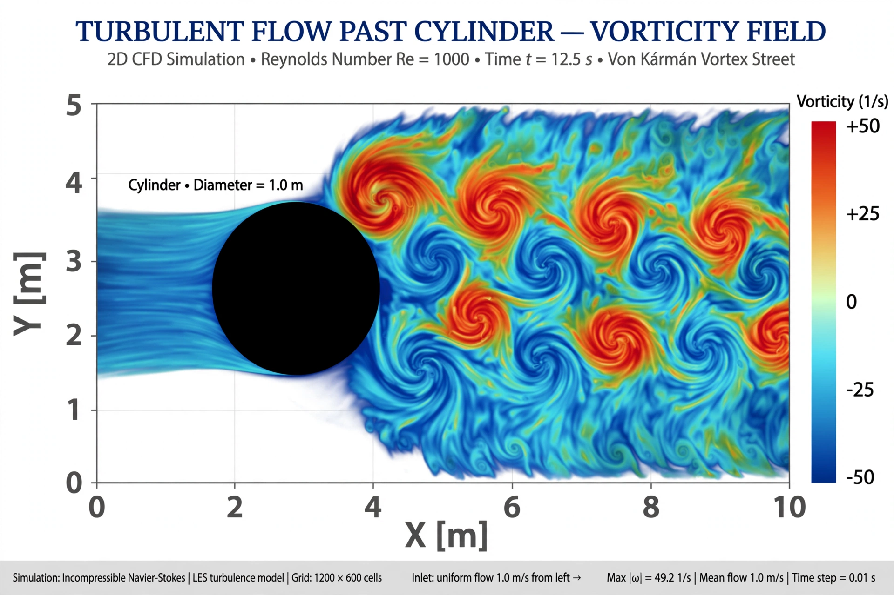

Navier–Stokes existence and smoothness
| Navier–Stokes existence and smoothness | |
|---|---|
 | |
| Field | Fluid mechanics, partial differential equations |
| Equations from | Claude-Louis Navier (1822), George Gabriel Stokes (1845) |
| Status | Open (3D); 2D case solved |
| Prize | Millennium Prize Problem |
The Navier–Stokes existence and smoothness problem concerns the mathematical theory of the Navier–Stokes equations, which describe the motion of viscous fluids such as water and air. It asks whether solutions in three dimensions always exist and remain smooth, or whether they can develop singularities ("blow up") in finite time. It is one of the seven Millennium Prize Problems of the Clay Mathematics Institute, with an official problem statement by Charles Fefferman.
The equations
The incompressible Navier–Stokes equations govern a velocity field u(x, t) and pressure p(x, t) subject to the incompressibility constraint ∇·u = 0. They combine Newton's second law with viscous friction and are used throughout engineering, meteorology, and oceanography — yet their basic well-posedness in 3D is unproved.
What is known
Jean Leray proved in 1934 that weak solutions always exist globally in time, but their uniqueness and smoothness are unknown. Smooth solutions are known to exist for short times, and forever if the initial data are small (work of Fujita and Kato). Ladyzhenskaya and others completely solved the two-dimensional problem, where smooth global solutions exist. In 3D, the difficulty is the vortex-stretching term, which can amplify vorticity; partial regularity theory (Caffarelli–Kohn–Nirenberg, 1982) shows any singular set must be very small. In 2016 Terence Tao proved finite-time blowup for an "averaged" version of the equations, suggesting the true equations, if they blow up, do so through a subtle self-similar mechanism; most experts lean toward global regularity, but no proof exists either way.
The prize problem
The official formulation asks for a proof, in either R³ with suitable conditions or the periodic torus, that smooth solutions with finite energy exist for all time for every smooth initial datum — or a counterexample exhibiting finite-time blowup.